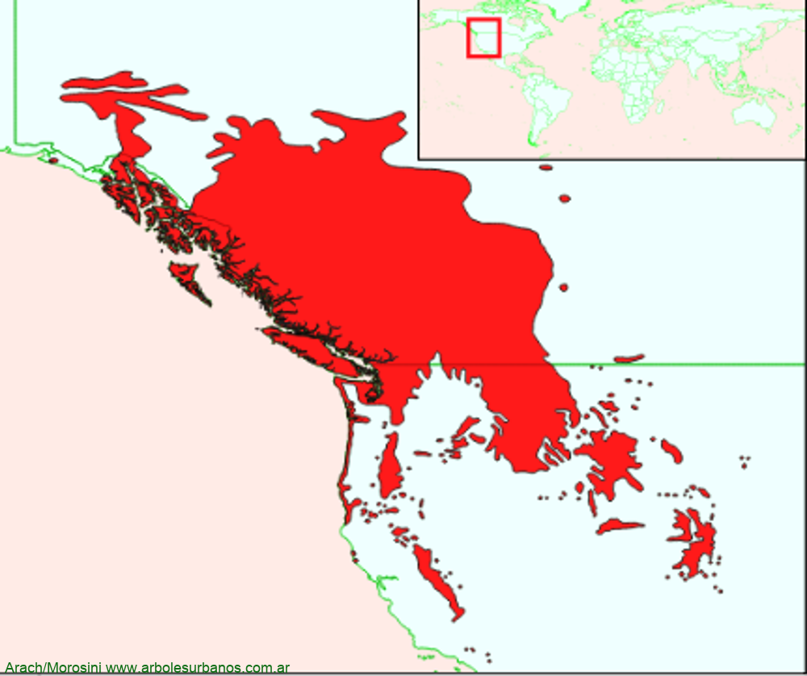

Click en las imágenes para ampliar

{kind=link}
{kind=link}
- NOMBRE CIENTÍFICO
- Pinus contorta var. latifolia
- FAMILIA BOTÁNICA
- Pináceas
- DESCRIPCIÓN GENERAL
- esta conífera es de mediana a gran talla, llegando por lo general a los 30 metros de altura, auque a veces llega a los 50. Posee una copa cónica, o piramidal. Su corteza es color pardo rojiza, resquebrajada en pequeñas placas desiguales. Sus hojas son acículas reunidas en fascículos de dos, estas son verde oscuras, a veces verde amarillento, son algo retorcidas de hasta 5 cm. de largo. Los estróbilos masculinos son amarillentos y cilíndricos, las masculinas son rojizas y cónicas, ambos aparecen a mediados de la primavera, sobre los brotes jóvenes. Sus conos son ovalados, algo asimétricos de color pardo anaranjado, de hasta 5 cm. de largo, pueden estar muchos años cerradas sobre la planta, abriéndose luego de los incendios.
- ORIGEN
- Esta especie tiene un amplio rango de distribución, crece en Norteamérica desde el norte de México, hasta Canadá desde las rocallosas, hasta la costa del Océano Pacífico.
- USOS
- Esta tiene fines forestales, en la región junto con el Pino ponderosa y el Pino oregon, es la más rústica de estas tres especies, pero de menor crecimiento, casi siempre se foresta con esta especie más hacia el este, ya que puede prosperar en lugares con menores precipitaciones
- REPRODUCCIÓN
- Se multiplica fácilmente por semillas
- PARTICULARIDADES
- Esta especie de pino es de las más agresivas ya que esparce sus semillas y se multiplica fuera de sus áreas de origen, además es una especie que a muy corta edad ya pude producir semillas viables. En Nueva Zelanda, donde se ha transformado en una especie invasora.
Pino contorta, Pino Murrayana, Pino costero